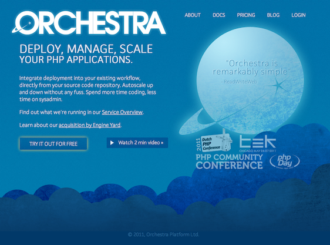

But still PHP
"A patch" is the origin of its name. Elder software which ruled the Web.
PHP can run as a CGI or with exotic server, but PHP glory came with mod_php : php inside Apache.
PHP is Apache, Apache is PHP.
PHP was a light glue around C library. That's why libraries sort arguments differently or two libraries almost do the same thing.
PHP core is thread safe, but not all its C libraries. Nobody knows which part is thread safe which part is not. So nobody use threads with PHP. Just fork it!
PHP runs in Apache, so Apache must use forked workers.
PHP is born and dies for each request. Nuclear cleanup.
PHP is bound. Time bound, memory bound. One request cannot bother others.
How many workers can I handle?
Total memory / PHP memory available.
4096 Mo / 128 Mo = 32 workers.
Keep some memories for the OS and other services.
Cross fingers in hope not to be CPU bound.
Apache picks in its pool of workers for PHP content or static content.
Forked workers is not good for static contents.
Are you burning workers just for waiting after your hard drive?
Serving statical contents is not CPU bound, but IO bounds. You are waiting after the hard drive, even with 32 cores.
Single thread server with an event loop is far better for such task. It accepts all connections, and answers only when a block of file is available. No idle threads are waiting after the hard drive. One thread to rule them all. Caching file in RAM is not a job for the webserver, but a task for the file system.
In a thread models, each cooke takes the command, cook the pizza and delivers it. If you want to serve 32 clients, you need 32 cooks. 33rd and others clients wait outside and timeout.
In an event model, you have fewer cooks, but a scheduler, which writes commands quickly and delivers the pizza to the right client when it is cooked.
PHP can run as a CGI, or, far better as FastCGI.
CGI launches an application for each requests.
FastCGI is a server, runs permanently with its owner, behind a TCP connection.
FastCGI is a standard. Apache talks FastCGI, but monothreaded servers too.
Lighttpd (Lighty) / Nginx (Engine X) / Cherokee
You can use different FastCGI servers behind a webserver. Different applications, or different instances of a same application with different configurations.
FastCGI can run on a different computer, just like your Mysql.
PHP-fpm was a Russian patch for php-cgi.
It is now a PHP 5.4 core feature.
IT IS STANDARD.
You loose it. It's Apache specific.
Each webserver handles it differently. Even with lua.
Most of the time, someone clever gives you the config file, Nginx is no more exotic.
Sometimes you need some PHP logic (ACL, concatenating files …) then serving a static file. If you are polite, you iterate over it, read and send parts. Or you put it in memory then throw it.
Lighty built X-sendfile for that.
Nginx named it X-Accel-Redirect and there also a mod_xsendfile for Apache.
The worker's job is done, it is now a webserver job, with sendfile optimization and rate limitation.
No more kleenex strategy. A PHP-worker is used 500 times. It is a compromise between creation cost and memory leaks.
Crashed workers are recycled earlier.
There is a slow log, like in Mysql.
The script file name and a stack trace are logged.
Now, good luck to find the context, most of PHP applications use a single entry point with routing.
Almost all PECL modules work.
APC cache is no pertinent anymore, but APC optimization is still useful.
XHProf and XDebug work very well.
You keep your main pages light and fast. But what about your admin pages with batch actions or "display all datas" ?
With Apache, you have to set memory and time bound for the worst case.
Like 1024 Mo and 30 minutes for an intranet. Elegant.
You can use different pools of connection with php-fpm. One pool per port. The webserver dispatch with url pattern to the right port.
Each pool has its own configuration and user.
You can use lots of workers and lots of servers for a huge website.
You can use 2 workers in a small virtualized slice or a plugserver.
Both work.
Use batch queue and php-cli.
wget in a cron file. Anyone already did that ?
Adding and removing workers is a cloud job.
You can do it yourself with Amazon, Joyent …
You can share a multi hosted frontend, and dispatch the load in the cloud.
Be careful with uploaded files.
Or you can use a PHP cloud hosting.

Huge websites use Apache workers with specific webserver for static files.
Facebook use HipHop, compiling PHP to C++ then serving it through an event loop.
You don't need LAMP.
You need stable software stack to build your website.
Shared hosting is no more a curse, there is now light or virtualized hosting.
Use something that suit your needs. Even Apache.